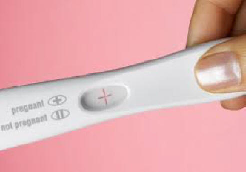
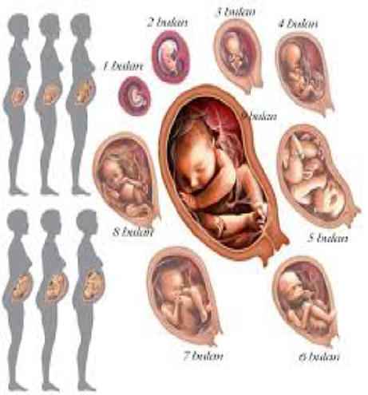

KehamilanKehamilan merupakan momen yang ditunggu bagi wanita yang ingin melengkapi kebahagiaan mereka untuk menjadi ibu. Setiap wanita yang sudah menikah pasti akan menunggu masa kehamilan. Karena, banyak yang menganggap kebahagiaan akan terasa sempurna jika sudah memiliki anak. Nah mums, bagi Anda yang sedang menunggu kehamilan, berikut ini merupakan beberapa hal yang perlu Anda perhatikan seperti yang dijelaskan oleh dr. Cepi Teguh Pramayadi, SpOG dari MeetDoctor.com.
Selain beberapa hal di atas, Anda juga disarankan untuk menjaga berat badan agar tetap ideal. Artinya, pastikan Anda tidak terlalu kurus atau gemuk dengan Indeks Massa Tubuh antara 20 - 30. Sebab, berat badan berpengaruh terhadap pematangan sel telur. Di samping itu, Anda juga perlu general check up ke dokter kandungan untuk dilakukan pemeriksaan dalam dan ultrasonografi transvaginal. Dalam pemeriksaan ini, Anda akan melihat ada tidaknya kelainan genitalia eksterna dan interna, seperti polip, tumor jinak atau mioma uteri, atau kista di indung telur. Diperlukan penanganan lebih lanjut bila ditemukan hal tersebut dengan cara operasi. Tak ketinggalan juga pemeriksaan laboratorium untuk melihat ada tidaknya anemia, gangguan fungsi hati, ginjal dan terpenting adalah ada tidaknya infeksi. Pengobatan yang diberikan yakni dengan pemberian antibiotik yang sesuai. Sumber: MeetDoctor.com |
||||
Tanda-tanda Kehamilan
Kehamilan adalah momen
yang sangat dinantikan oleh pasangan suami istri, terlebih lagi
pasangan baru. Uniknya, banyak calon ibu yang tidak mengetahui saat ia
tengah hamil muda dan biasanya baru diketahui setelah usia kandungan
memasuki beberapa minggu.
Jadi, coba perhatikan lima tanda-tanda umum di atas, siapa tahu Anda ternyata sedang hamil muda Ladies. Ditinjau oleh: dr. Rahajeng A.P (MeetDoctor) |
 | |||
Cara Menghitung Umur Kehamilan
| Cara menghitung umur kehamilan sebaiknya harus diketahui oleh para wanita terutama para ibu hamil, supaya para ibu bisa merawat dan menjaga kesehatan janinnya secara lebih maksimal. Belum lagi sekarang cara penghitungan usia kehamilan tersebut sudah bisa dilakukan dengan berbagai macam cara, baik dengan cara yang manual dengan menggunakan rumus atau dengan menggunakan perangkat keras atau perangkat lunak tertentu yang biasa digunakan dalam dunia kedokteran. Cara Menghitung Usia Kehamilan Secara Manual
| Bagaimana cara menghitung umur kehamilan secara manual untuk mengetahui berapa bulan usia atau umur kehamilan? Caranya cukup mudah. Jadi misalkan angka atau tanggal yang Anda dapatkan pada penghitungan HPL adalah 22 Oktober. Maka gunakan saja tanggal 22 tersebut sebagai patokannya. Misalnya HPHT terjadi pada bulan April. Maka satu bulan usia kandungan Anda diperkirakan akan terjadi pada 22 Mei. Begitu seterusnya sampai masa tanggal kelahiran yang diprediksikan dengan cara menghitung umur kehamilan menggunakan rumus neagele ini. Akan tetapi khusus untuk HPL atau hari perkiraan lahir, biasanya Anda harus memperkirakan tenggang waktunya juga kurang lebih plus minus 7 hari. Cara Menghitung Umur Kehamilan Secara Klinis
|
Selain dengan cara menghitung usia kehamilan secara manual, ada juga beberapa cara penghitungan atau perkiraan secara klinis yang bisa Anda lakukan. Caranya pun lebih mudah dan tingkat keakuratannya pun mendekati 100 persen. Untuk melakukan pemeriksaan tersebut Anda bisa langsung datang ke rumah sakit. Jika saat menghitung atau memperkirakan tinggi rahim atau fundus uteri Anda mengalami kesulitan, Anda bisa datang ke dokter supaya bisa dibantu dan hasilnya pun lebih akurat ketimbang harus menghitungnya sendiri. Selain itu, proses penghitungan secara klinis juga bisa Anda lakukan menggunakan teknologi USG atau ultrasonografi. Proses pemeriksaan kehamilan yang diawali pada tahun 70-an ini sampai sekarang masih menjadi salah satu alat penghitung usia kehamilan yang paling akurat. Bahkan bukan hanya usia kehamilannya saja, tetapi dengan menggunakan pemeriksaan USG Anda bisa mengetahui bagaimana keadaan janin Anda di dalam kandungan dan juga bagaimana perkembangannya setiap minggu atau setiap bulannya. Bahkan saat ini juga sudah ada teknologi 3 dimensi yang memungkinkan Anda bisa melihat bagaimana ekspresi si bayi saat berada di dalam kandungan dan mengetahui kegiatan bayi selama berada di dalam perut sang ibu. Jadi, bagaimana? Apakah Anda sudah paham tentang bagaimana saja cara menghitung umur kehamilan, baik dengan cara manual atau dengan cara klinis? Tak bisa dipungkiri bahwa mengetahui berapa usia kehamilan Anda menjadi salah satu hal yang sangat penting Anda ketahui sebagai ibu hamil. Dengan mengetahui usia kehamilan Anda, tentu saja akan memberikan beberapa keuntungan, diantaranya Anda bisa memantau perkembangan bayi, Anda bisa memperkirakan kapan bayi akan lahir, dan lainnya. Maka dari itu tidak ada salahnya jika Anda mempelajari dan mengetahui cara menghitungnya.
 |
|
Coder Mums Pioneer by @ayu